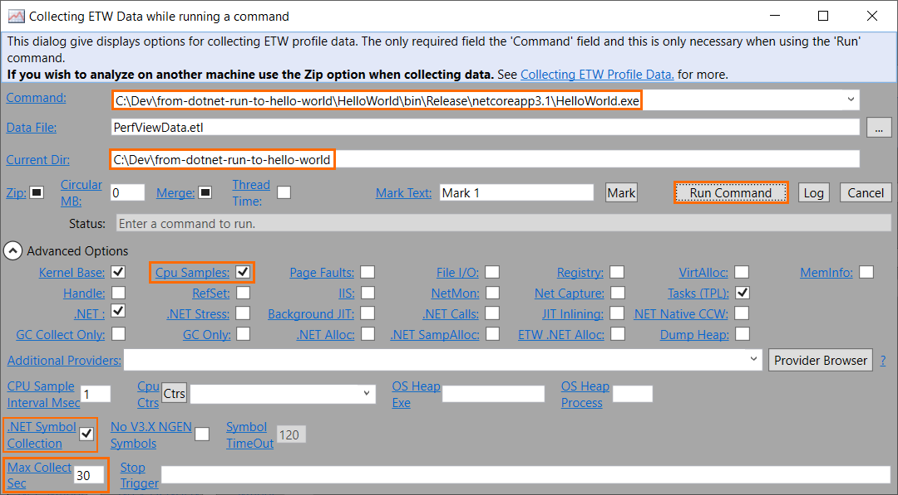
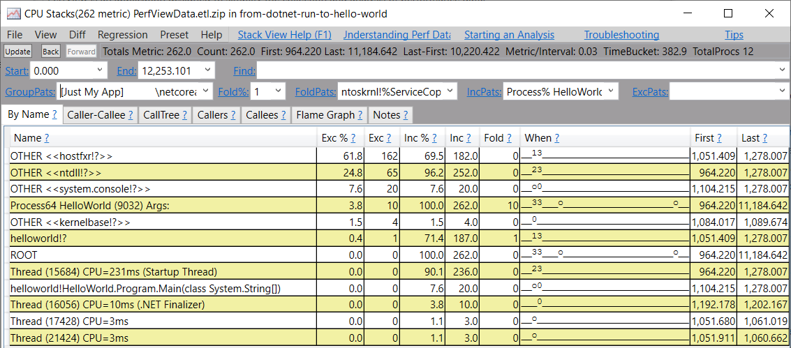
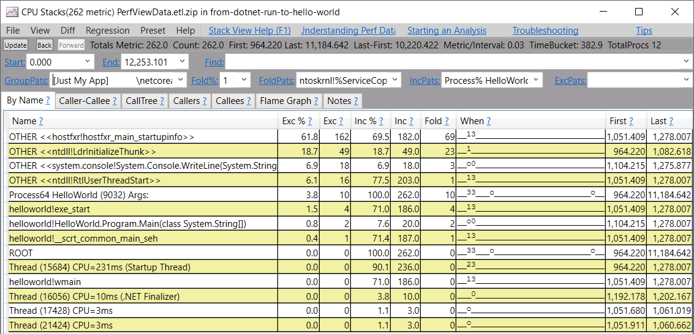
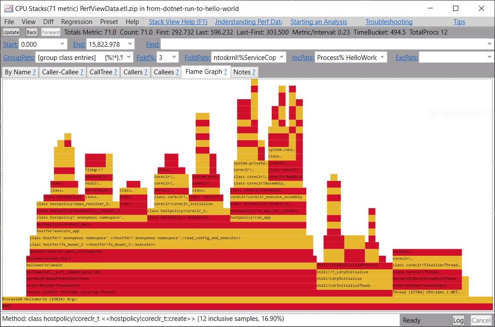
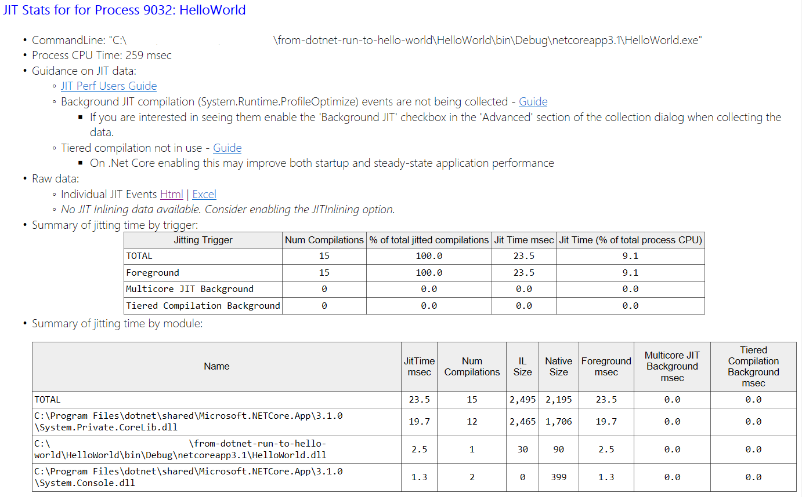

使用Flamegraph分析.NET启动时间
.NET运行时在启动过程中在哪里花费时间？
翻译自 https://mattwarren.org/2020/03/03/Analysing-.NET-Runtime-Startup-with-Flamegraphs/
代码样例
在本练习中，我们仅关注程序启动期间的.NET运行时，我们确保正在运行最少数量的用户代码，因此使用以下“Hello World”：
1 | using System; |
之所以添加Console.ReadLine()调用是因为我想确保在PerfView仍在收集数据的同时该过程不会退出。
数据采集
PerfView是一个非常强大的程序，但不是最用户友好的工具，因此我整理了逐步指南：
- 下载并运行最新版本的“ PerfView.exe”
- 单击“Run a command”或（Alt-R），然后单击“collect data while the command is running”
- 确保输入以下值：
- “Command”
- “Current Dir”
- 如果尚未选中，请勾选“ Cpu Samples ”
- 将“ Max Collect Sec ”设置为15秒（因为我们的“ HelloWorld”应用程序永远不会退出，因此我们需要确保PerfView在某个时刻停止收集数据）
- 确保已选择“ .NET Symbol Collection ”
- 点击运行命令

如果随后查看该日志，则可以看到该日志正在收集数据，获取符号并最终将所有内容写到.zip文件中。完成该过程后，您应该在主UI的左侧窗格中看到新创建的文件，在这种情况下，该文件称为“ PerfViewData.etl.zip”
数据处理
拥有“ .etl.zip”文件后，双击该文件，您将看到带有所有可用数据的树状视图。现在，选择“ CPU Stacks”，将显示如下视图：

注意列表中有很多“？” 的字符，这意味着PerfView无法解决方法名称，因为它尚未解析运行时dll的必要符号。让我们修复：
- 打开“ CPU堆栈”
- 在列表中，选择“ HelloWorld ”过程（PerfView在整个计算机范围内收集数据）
- 在“ GroupPats ”下拉列表中，选择“ [no grouping]”
- 可选，将“符号路径”从默认值更改为其他值
- 在“按名称”标签中，按“ Ctrl + A”以选择所有行
- 右键单击并选择“查找符号”（或仅单击“ Alt + S”）
现在，”CPU Stacks”视图应如下所示：

最后，我们可以获得所需的数据：
- 选择“Flame Graph”标签
- 将“ GroupPats ”更改为以下值之一以获得更好的火焰图：
- 将“ Fold％ ”更改为更高的数字，可能是3％，以消除一些悠长的线条（更高的条形，但将丢失一些细节信息）

现在，在这一点上，我建议用PerfView数据导出为可装入一个格式https://speedscope.app 这个网站上可以生成更直观的火焰图。为此，单击File->Save View As，然后在“Save as type”框中选择“Speed Scope Format”。之后即可上传到speedscope.app 进行分析。
.NET运行时启动的分析
最后，我们可以回答我们原来的问题：
.NET运行时在启动过程中在哪里花费时间？
这是来自Flamegraph的数据，摘要为文本，并链接了.NET Core Runtime源代码中的相应功能：
- 整个应用-100％ -233.28ms
- 一切，除了helloworld!wmain- 21％
- helloworld!wmain- 79％ - 184.57ms
- coreclr!RunMain- 9.9％， - 23.12ms
- coreclr!RunStartupHooks- 8.1％， - 19.00ms
- coreclr!CorHost2::Start- 9％， - 20.98ms
- coreclr!CorHost2::CreateAppDomain- 10％ - 23.52ms
- hostpolicy!create_hostpolicy_context- 30％ - 70.92ms
- hostpolicy!create_coreclr- 22％ - 50.51ms
- hostpolicy!runapp- 20％ - 46.20ms 最终调用到Assembly::ExecuteMainMethod
- hostfxr!resolve_frameworks_for_app- 3.4％， - 7.89ms
因此，运行时花费时间的主要位置是：
- 花了总时间的30％来启动运行时，这是通过“host policy”控制的，这主要发生在hostpolicy!create_hostpolicy_context总时间的30％中
- 22％的时间花费在运行时本身及其创建的初始（唯一）AppDomain的初始化上，这可以在CorHost2::Start（native）和CorHost2::CreateAppDomain（managed）中看到。
- 从上面开始，在我们的“ Hello World”代码示例中使用了20％的JITting并执行了该Main方法Assembly::ExecuteMainMethod。
为了确认最后一点，我们可以返回PerfView并查看它产生的“ JIT统计摘要”。从主菜单的“高级组”->“ JIT统计信息”下，我们看到JITing花费了23.1 ms或9.1％的CPU总时间：

 支付宝打赏
支付宝打赏
赞赏是不耍流氓的鼓励